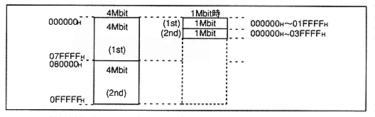

Specify the slot number you want to monitor in the “CA” register. "0H" becomes "SLOT0", and "1FH" becomes "SLOT31".
CA (R); Call Address
The slot with the number set in this register can read the address of the currently read waveform data as the relative number of samples (sample number = number of waveform data samples) from "SA" (start address) .
Since the LSB (least significant bit) of the value that can be read here indicates 4K (4096) samples, when the read value is "1H", the monitored slot must have a waveform address of at least 4K samples from "SA" It is reading.
Sound memory configuration register
MEM4MB (W); MEMory 4MBit
Specify the amount of memory connected to SCSP.
Table 4.32 Memory capacity
MEM4MB
Memory capacity
0
Use 1Mbit DRAM
1
Use 4Mbit DRAM
Figure 4.58 Memory address mapping diagram

MIDI register
SCSP has a MIDI serial interface with a transfer rate of 31.25Kbps. However, MIDI peripheral circuits and MIDI DIN connectors are not installed, so MIDI applications cannot be created.
∙ MIDI interface block diagram is shown in Figure 4.59.